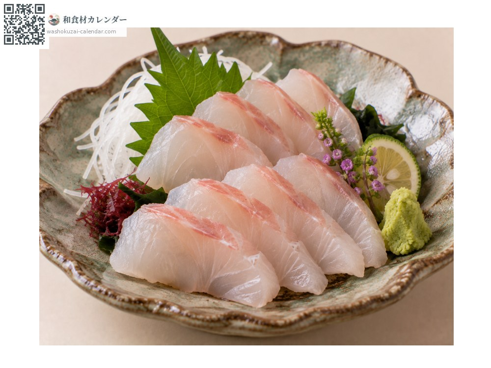
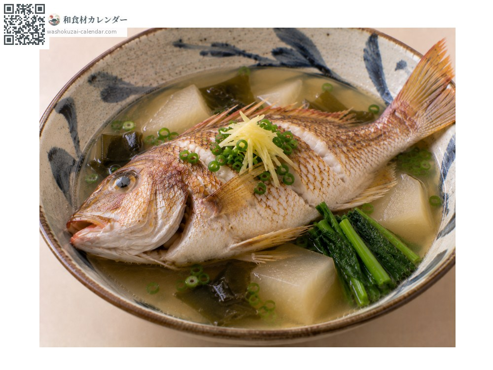
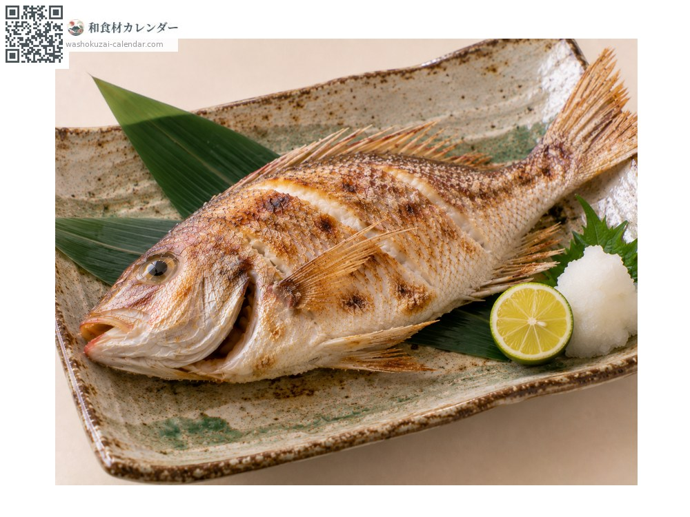
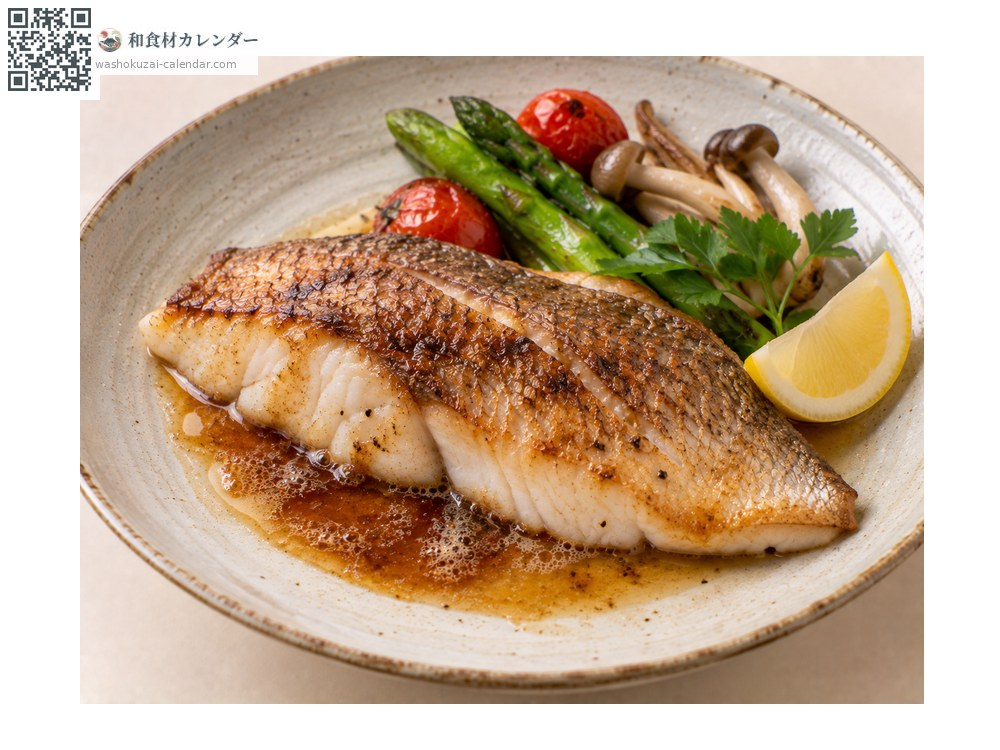

魚介
フエフキダイ
ふえふきだい
別名・別表記笛吹鯛、タマン、fuefukidai、taman
旬は5月・6月・7月・8月

旬の時期
1月
2月
3月
4月
5月
6月
7月
8月
9月
10月
11月
12月
旬出回り
調理法

刺身
上品な白身。旨みが強く、昆布締めにも向く。

マース煮
塩と泡盛で煮る沖縄の調理法。骨から良い出汁が出る。

塩焼き
皮目を香ばしく焼く。身がふっくらする。

バター焼き
洋風の調理も合う。淡白な身がコクを受け止める。
選び方
体色が鮮やかで、口の周りが赤みを帯びているもの。体に厚みがあるもの。
保存方法
内臓を取って冷蔵。身が締まっているため2〜3日は持つ。
主な産地
豆知識
沖縄では「タマン」と呼ばれ、県を代表する高級魚のひとつ。口をすぼめた形が笛を吹くように見えることが和名の由来。